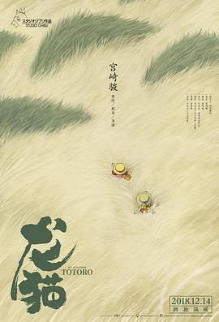

龙猫 / となりのトトロ
又名：邻居托托罗 / 邻家的豆豆龙 / 隔壁的特特罗 / Tonari no Totoro / My Neighbor Totoro
2019-04-16 10:26PM Adelaide: 今天搜毛毛虫菠萝，发现只在吉卜力博物馆上映，于是突然想看下miyazaki以前的作品，刚好龙猫的剧情也记得很模糊了，于是就决定看它了。刚好昨天家里通了光纤，果断就下载了。这次应该是第三或者第四次看了吧，之前都是国内的时候在CCTV6看。这次看感觉又不一样，感觉宫崎骏的画面都特别有生机，特别生动。夸张的画风，和细节的把握，比如说小月搬新家没有拖鞋就进屋，然后用膝盖走路，这个太细节了！ //上一次标记是2014-01-26：治愈！
作品信息
| 导演 | 宫崎骏 |
| 编剧 | 宫崎骏 |
| 主演 | 日高范子 / 坂本千夏 / 糸井重里 / 岛本须美 / 北林谷荣 / 高木均 / 雨笠利幸 / 丸山裕子 / 广濑正志 / 鹫尾真知子 / 铃木玲子 / 千叶繁 / 龙田直树 / 鳕子 / 西村朋纮 / 石田光子 / 神代知衣 / 中村大树 / 水谷优子 / 平松晶子 / 大谷育江 |
| 类型 | 动画 / 奇幻 / 冒险 |
| 制片国家/地区 | 日本 |
| 语言 | 日语 |
| 上映日期 | 2018-12-14(中国大陆) / 1988-04-16(日本) |
| 片长 | 86分钟 |
| IMDb | tt0096283 |
最后一次看到是 2026-08-01T11:07:21+10:00 · 豆瓣原页